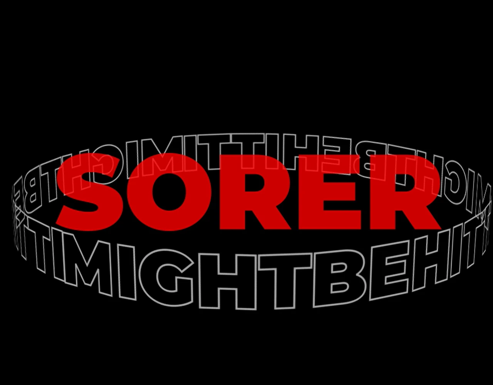

Type expands to create impact without introducing extra imagery.
Selected workLet the type
Kinetic typography · Motion study
Let the type
carry the rhythm.
A kinetic typography study for “HONOR” by KHAYAT, exploring how scale, repetition, and timing can turn words into performance.
Watch the sequence
- My role
- Kinetic typography & visual animation
- Context
- Portfolio motion study
- Music
- “HONOR” by KHAYAT · Credit retained
- Format
- 30-second animated sequence
01 / The idea
Read it. Hear it. Feel the timing.
The work treats typography as moving image. Solid and outlined letterforms occupy different levels of emphasis, while repetition creates a visual beat before the words change position or scale.
02 / Motion grammar
Contrast makes rhythm visible.
Red foreground type carries the primary beat. White outlines become echo, anticipation, and residual motion. Black space gives every transition a decisive edge.
Outlined words build tempo and spatial depth.
Transitions follow musical emphasis rather than a fixed decorative loop.
03 / The sequence
The motion is the primary work.
Play the full 30-second study to see how the hierarchy changes over time. Sound and playback remain under the viewer’s control.
04 / The result
A compact study in typographic performance.
The completed sequence demonstrates motion hierarchy, pacing, repetition, and the translation of musical emphasis into type. Animation is by Sofiia Sanzharovska; the music credit remains with KHAYAT.